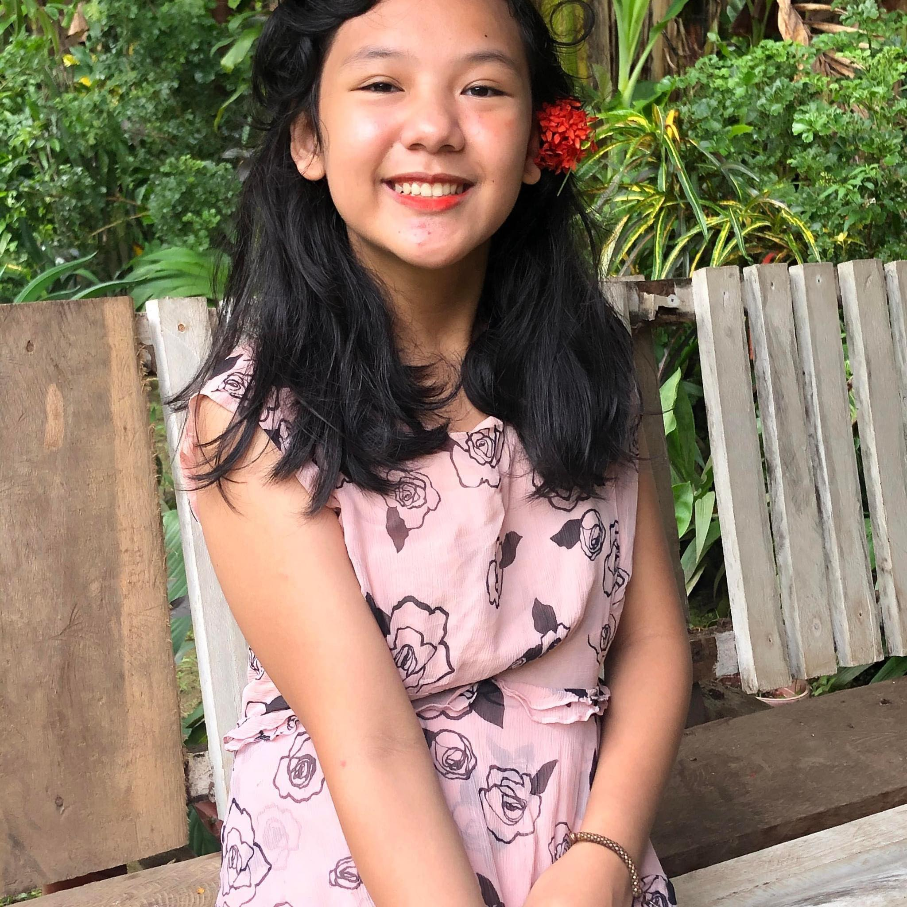

The institution offers services such as Psychosocial intervention, Medical Services,
Educational services, And many more to provide the children with their needs.
The problem that the institution is facing today is the inadequate budget. With their
benefactors and donations decresing, Children also need behavioral development. By coming
up with the solution, we decided to have a donation drive which is called "All for love drive"
in which it aims to help provide the needs of their residence in the institution.
About Web Designer
Lois Camasura

Lois is a 15 year old teenager that's studying in Ateneo de Davao University.
Her grade, section and group is 9 St. Edmund Campion group 2B. Her hobbies are
playing online games, singing, dancing, talking with friends and zoning out. During
her free time, she enjoys reading books and playing volleyball with her friends.